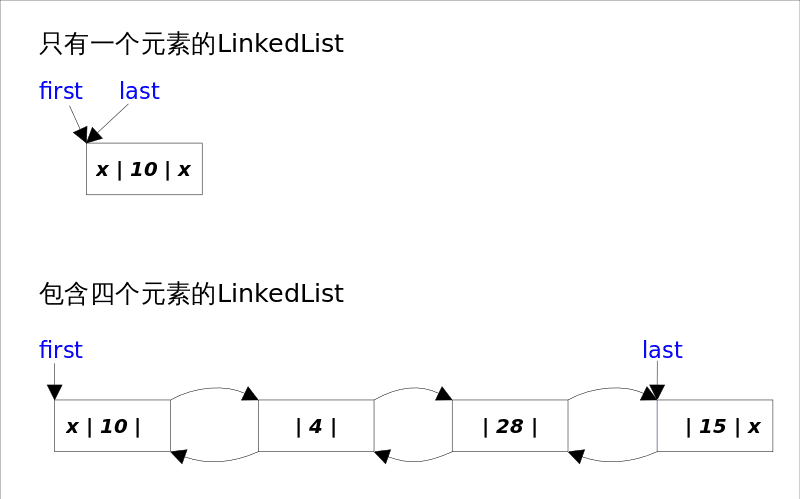

Ch03-Java Collection 之 LinkedList
January 23, 2017
LinkedList 同时实现了 List 接口和 Deque 接口，也就是说它既可以看作一个顺序容器，又可以看作一个队列 (Queue)，同时又可以看作一个栈 (Stack)。所以当需要使用栈或者队列时，可以考虑使用 LinkedList。
1. 底层数据结构 #
每个 ArrayList 都有一个容量 (capacity)，表示底层数组的实际大小，容器内存储元素的个数不能多于当前容量。当向容器中添加元素时，如果容量不足，容器会自动增大底层数组的大小。Java 泛型只是编译器提供的语法糖，所以这里的数组是一个 Object 数组，以便能够容纳任何类型的对象。
LinkedList 基于双向链表实现，因此决定了所有跟下标相关的操作都是线性时间，而在首段或者末尾删除元素只需要常数时间。为追求效率 LinkedList 没有实现同步 (synchronized)，如果需要多个线程并发访问，可以先采用 Collections.synchronizedList() 方法对其进行包装。
